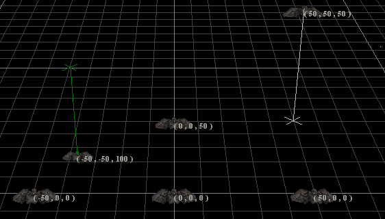

|
Basic Concepts
|
| |
This file introduces some basic concepts about using FRED2.
The sections are:
|
Cartesian Coordinates
|
| |

The position of each object (ship, jump node, etc.) in FRED2 is
given by three numbers, called
X, Y, and Z. When you first start FRED2, the
default ship is at
position (0, 0, 0). This point is called the origin.
From the starting point of view, X indicates how many meters to the
right of the origin an object is. If an object is to the left of
the origin, it will have a negative X value.
Similarly, Y indicates how many meters up the object is, and Z
indicates how many meters it is back into the screen.
The coordinates of the camera are shown in the upper right of the
FRED2 window.
|
Movement Commands
|
| |
The following commands move the camera:
| Key |
Effect |
Key |
Effect |
| 1 (keypad)
|
Move left
|
4 (keypad)
|
Turn (yaw) left
|
| 3 (keypad)
|
Move right
|
6 (keypad)
|
Turn (yaw) right
|
| A
|
Move forward
|
8 (keypad)
|
Turn (pitch) up
|
| Z
|
Move backward
|
2 (keypad)
|
Turn (pitch) down
|
| - (keypad)
|
Move up
|
7 (keypad)
|
Roll left (ship view only)
|
| + (keypad)
|
Move down
|
9 (keypad)
|
Roll right (ship view only)
|
There are several modes which make these commands do different things:
Current Ship view,
Rotate Around Object,
and
Control Object mode.
|
Selection and Marking
|
| |

Many commands refer to the currently selected or marked objects.
The difference is subtle, but important. Only one object can be
selected at a time, but several objects can be marked.
The currently selected object, if any, gets a white outline. Other
currently marked objects get gold outlines. In the picture at
right, the GTC Curly is selected. The GTCs Curly, Larry, and Moe
are all marked. The GTC Shemp is neither selected nor marked.
When more than one object is marked, many commands (including
movement and rotation)
affect all of them as a group. If you just want to move one
ship, make sure nothing else is marked!
The words "selected" and "marked" are not used entirely
consistently throughout FRED2. For example, the Select List
button should probably be called Mark List.
|
Mouse Commands
|
| |
The mouse commands within FRED2 are shown below. The list may
seem long, but don't worry; the mouse generally does about what
you'd expect.
| Mouse Action |
Effect |
| Click on an object |
Select and mark object under pointer. All other
objects become unmarked. (This behaves differently if the
Selection Lock button is pressed.)
|
| Click in empty space |
Clear all selection and marking. (This behaves
differently if the
Selection Lock button is pressed.)
|
| Lasso (drag a rectangle around some stuff)
|
Mark several objects and select one.
|
| Shift click / Shift lasso
|
Mark object(s), and select (one) if nothing else is selected.
|
| Ctrl click
|
Create a new object of the type indicated by
the Selection Box.
|
| Drag an object
|
Possibly move or rotate the currently marked object(s),
depending on the Mouse Drag Mode.
If the object under the pointer is not marked, this also
selects it and unmarks everything else.
|
| Ctrl drag
|
Copy marked object(s)
|
| Right click on an object
|
Pop up a menu, which allows opening one of several Editors on the object under the pointer and any
other marked objects.
|
| Right click in empty space
|
Pop up a menu, which lists some choices from the View Menu
and the Selection Box.
|
If you're having trouble placing things precisely, you might
want to use the Objects
Editor. Also, remember that you can move the camera to see
things from a better angle, and use the Speed Menu to change the camera speed.
|
The Status Bar
|
| |

The status bar is at the bottom of the screen. It tells you how
many objects you have marked, how the Viewpoint is set (in
the View Menu), whether
you have made any modifications to your mission since last saving
it, and how far across the small squares on the grid are. (The
large squares are ten times as far across.)
You can turn the status bar off in the View Menu.
|
|